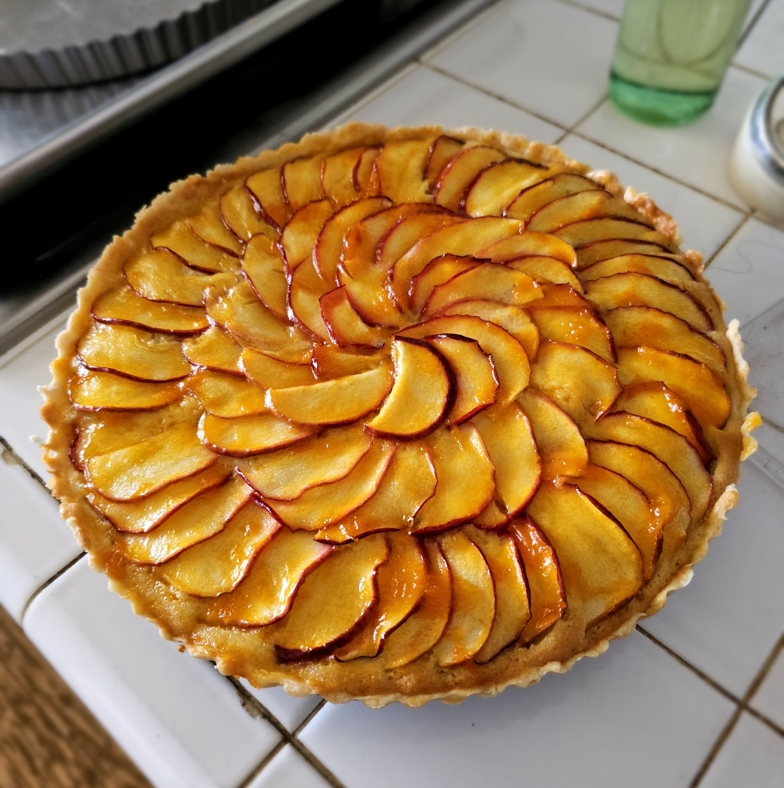

This recipe is based on the youtube channel J'adore자도르's recipe from the video [Eng Sub]사과 타르트(애플파이) 만들기 How to make French Apple tart, pie ｜자도르
Ingredients
- Tart Shell
- 136g cake flour (22.66g corn starch, 115.6g all-purpose flour)
- 70g cold butter
- 32g cold water
- 12g cold egg yolk (1 egg yolk or so)
- 1 tsp or so salt
-
Flour Cream (original recipe uses almond cream)
- 80g room temperature butter
- 80g room temperature egg
- 80g sugar
- original recipe asks for sugar powder, sugar worked fine
- 63.3g all-purpose flour
- original recipe asks for 80g almond flour, 10g cake flour
- original recipe also uses 5g rum (gold rum apparently goes well with apple?)
-
Topping
- 6 apples(?)
- 40g apricot jam
- 10g water
Instructions
-
Tart Shell
- Cube the butter.
- In a food processor, put the flour and butter and pulse till the butter becomes rice or pea sized pieces.
- Empty the contents of the food processor onto a worksurface and make a divot in the flour.
- Pour your egg yolk, water, salt mixture into the divot.
- Mix the mixture with the flour within the divot till it has been mostly absorbed (making sure to keep the mixture cold so the butter doesn't melt).
- Then roughly combine the flour till it becomes a single mass without any powder.
- You can then cut the mass in half and places the two halves over each other and press them together to create layers.
- The result was still quite nice even without this step.
- Wrap and keep in fridge for around 1 hour.
- roll out and line your tart pan
- Place back in the fridge till ready for use.
-
Flour Cream
- Cream the butter.
- Put in the sugar and whisk till just incorporated (the goal is not to add air)
- Whisk the egg in slowly to the mixture, adding in parts (around 8 parts).
- the 1 to 1 ratio of egg to butter can lead to easy separation if the egg is too cold or the egg is not added gradually.
- Sift in the flour (or the almond flour and cake flour)
- Lightly fold in the flour.
- (optional) Add the rum and lightly mix.
-
Topping
- Fill the lined tart pan with the cream.
- Make sure the cream layer is level.
- Cut the apples into thin slices (I kept the skin for looks).
- Place the apples on top of the cream in a spiral pattern.
- Do more than one layer.
- Place in a 170°C (338°F) oven for around 50-55 minutes.
- When done, remove from oven and brush a warm mixture of the apricot jam with the water.
- Then, when the tart has cooled slightly, repeat this process of brushing the jam mixture.
-
Extra: Apricot Jam
- Peel and core your apricots and place the flesh in a pot with an approximately equal amount of sugar.
- Add a bit of lemon juice and cook till it becomes thick and glossy.
- Turn the heat off and add a bit more lemon juice.